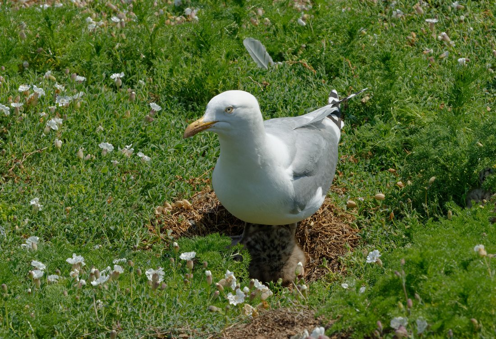
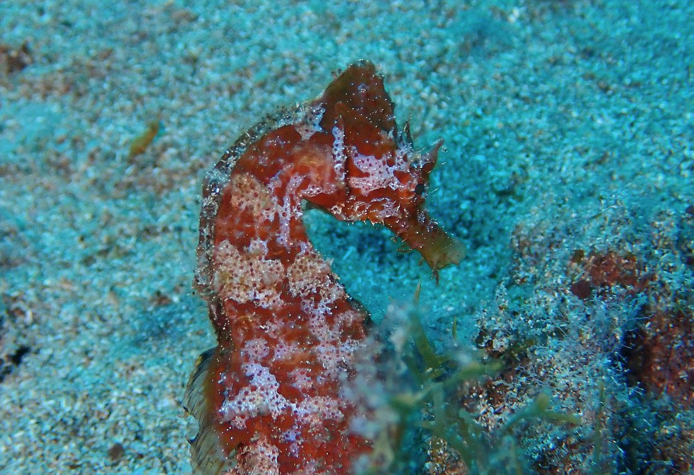

Période 5 · La merCartes de contrôle (photo + nom) — planche 1/3Imagier faune et flore · GS

le dauphin
période 5 · la mer · faune

la mouette rieuse
période 5 · la mer · faune

le goéland argenté
période 5 · la mer · faune

le crabe
période 5 · la mer · faune

l’étoile de mer
période 5 · la mer · faune

l’hippocampe
période 5 · la mer · faune